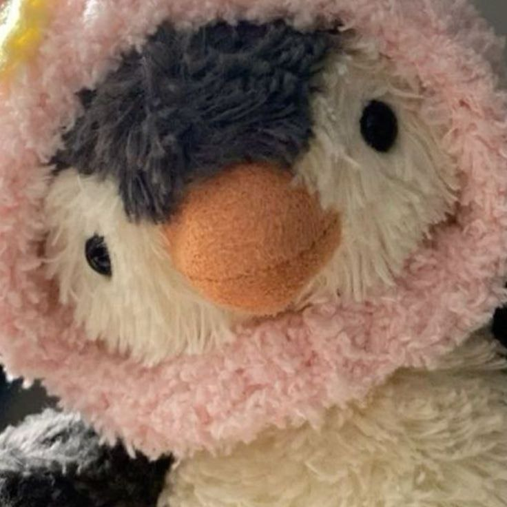

TAWSIF AHMED
Hi stranger!
I’m TAWSIF, ai researcher at Harvard University + Harvard Medical School. I lead a team under supervision of Prof. Shriya Srinivasan, Prof. Ara Nazarian and Dr. Kiran Jay Agarwal Harding. Currently, working on a startup + research project. Both at Harvard. I’m also a Guest researcher at Donders Institute of Brain, Cognition and Behaviour under Prof. Paul Tsienga and Prof. Lisa Genzel.
Thanks for reading my short introduction, now if you want to reach out to me, please either message me on LinkedIn or sleeping4cat@gmail.com